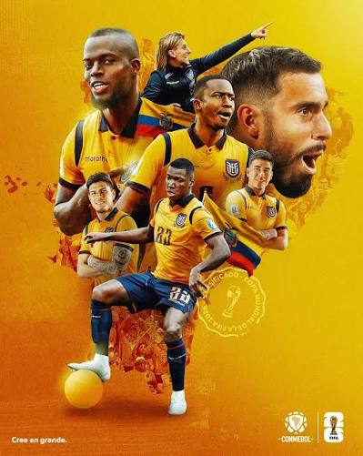

Ecuador ha participado en 4 Copas Mundiales: Corea-Japón 2002 donde debutó con Agustín Delgado como figura pero quedó eliminado en fase de grupos, Alemania 2006 donde logró su mejor actuación histórica al clasificar por primera vez a octavos de final tras vencer a Polonia y Costa Rica con goles de Carlos Tenorio e Iván Kaviedes antes de caer 1-0 ante Inglaterra con gol de tiro libre de David Beckham, Brasil 2014 donde volvió a competir con Enner Valencia anotando 3 goles pero no le alcanzó para pasar de grupo, y Qatar 2022 donde empezó ganándole 2-0 a Qatar con doblete de Enner Valencia en el partido inaugural pero terminó eliminado en fase de grupos por diferencia de goles ante Senegal, siendo siempre recordada como una selección que se hace fuerte jugando en la altura de Quito y que representa con mucho orgullo a un país donde el fútbol es pasión nacional.
